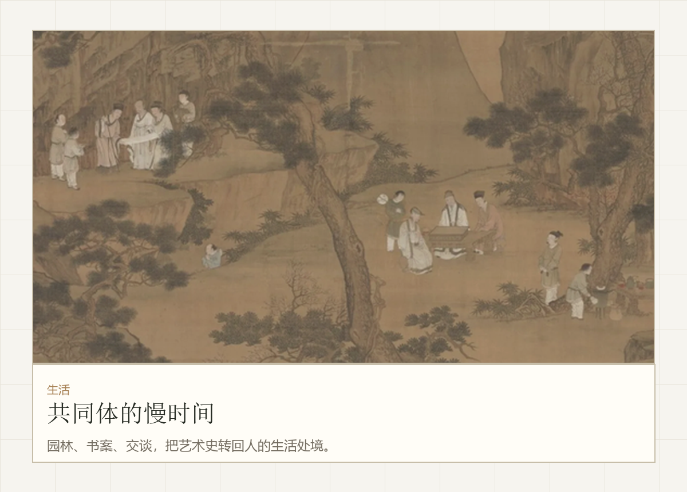

时间被拉长
从“美学时钟”进入古代星图：美不只是当下的节奏，也是一种长周期秩序。

她把生活审美中的感受能力带入艺术史课，在时间、价值与文明结构之间形成自己的判断线索。
王美丽的个人视觉经验在这里不作为作品集展示，而是转化为她进入艺术史问题的背景。



她的成长不靠长篇定义，而是靠三个可以被看见的转向。
从“美学时钟”进入古代星图：美不只是当下的节奏，也是一种长周期秩序。
从价格与价值的分裂，进入毛公鼎式的承诺、铭文和制度记忆。
楚漆不只是奇异图像，而是一套让文明想象继续发光的价值结构。


她以前更关心图像如何表达自己，现在开始追问图像如何支撑一个共同世界。
从生活敏感度进入历史图像。
能提出价值论和长周期问题。
适合转化为课程讨论和游戏角色。
从个人生活美学推进到文明尺度。